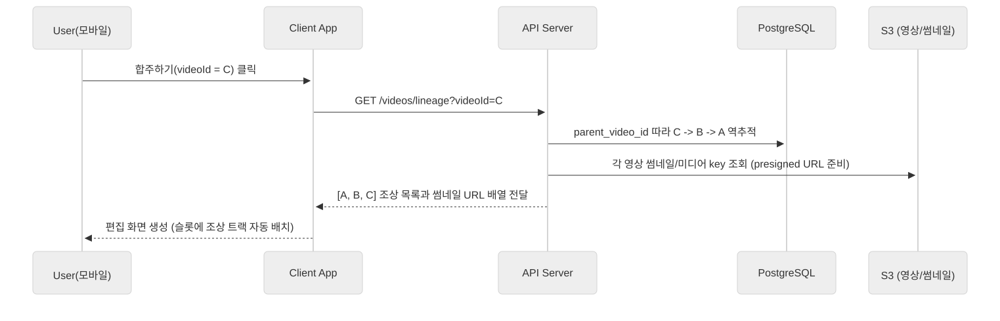
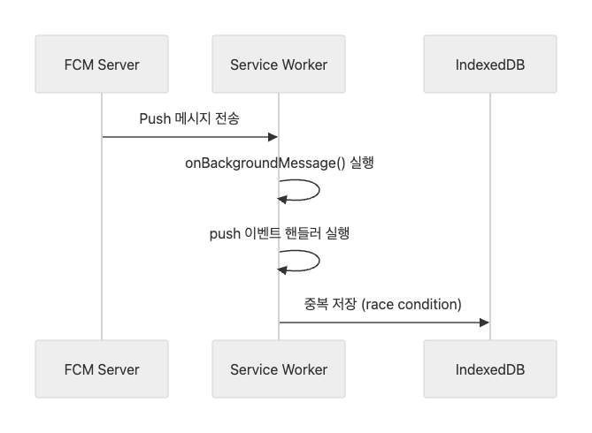

모바일 환경에서 영상 병합 및 트리밍 기능을 구현하기 위해 FFmpeg 기반 네이티브 연동을 시도했습니다. 공식 패키지인 react-native-ffmpeg와 후속 프로젝트 ffmpeg-kit-react-native 모두 유지보수가 중단되어 React Native 최신 버전과의 호환성이 확보되지 않은 상태였습니다. 이에 따라 FFmpeg를 직접 바이너리 형태로 주입(compile & inject)하여 iOS 환경에서 동작하도록 구성하고, Full-GPL 빌드 버전으로 아래 기능을 모바일 단에서 구현했습니다.
영상 트리밍 및 병합
메타데이터 추출
썸네일 생성
Canvas API
이미지 업로드 파이프라인에서 클라이언트 단 리사이징·압축·썸네일 생성을 수행하기 위해 Canvas API를 사용했습니다. FFmpeg.wasm은 초기 번들 용량이 수 MB 이상으로 단순 이미지 리사이즈에 비해 과도한 의존성이 발생합니다. 반면 Canvas API는 브라우저 기본 제공 인터페이스로 별도 로드 없이 GPU 가속을 활용하며, toBlob() API로 손쉽게 JPEG/WebP 재인코딩이 가능합니다.
따라서 FFmpeg는 영상 편집(트리밍·병합)에 집중시키고, Canvas API는 이미지 경량화·썸네일 생성에 분리하여 서버 부하를 줄이고 업로드 속도를 최적화했습니다.
◈ 개발 과정
클라이언트 이미지 업로드 파이프라인 최적화
Canvas API + S3 Presigned URL
📍 배경
게시글·프로필·영상 썸네일 등 다양한 이미지가 업로드되는 구조에서, 해상도·파일 크기 차이로 인해 업로드 지연과 서버 I/O 병목이 발생했습니다. 단순 서버 중계(upload proxy)는 S3 전송량 및 저장 비용 측면에서 장기적으로 확장성이 떨어지는 구조였습니다.
⚙️ 문제 인식
사용자가 대용량 이미지를 업로드하면 서버가 직접 파일 스트림을 받아야 했음
백엔드의 요청 처리 지연 및 트래픽 증가로 전체 응답 속도 저하
네트워크 환경이 불안정한 모바일 환경에서 업로드 실패율 증가
클라이언트 리사이징: Canvas API로 이미지 크기 조정 및 JPEG 압축 → 업로드 전 용량 70~80% 절감
이중 버전 관리: 썸네일·원본을 분리 저장, 각각 Presigned URL 발급 → 리스트 뷰 경량 렌더링
Presigned URL 업로드: 클라이언트가 S3로 직접 PUT → 서버 부하 최소화, 전송 병목 제거
메타데이터 저장: 업로드 완료 후 S3 key, 순서, refPostId 등을 DB에 저장하여 게시글 연결
🚀 결과 및 효과
업로드 지연 없이 썸네일이 즉시 피드에 노출 → 사용자 체감 속도 향상
서버는 파일 스트림 처리 불필요 → 부하 및 비용 감소
구조화된 키 규칙(refIn/refPostId)으로 도메인별 확장성 확보 → 영상 썸네일·프로필 이미지 등 동일 파이프라인 재활용
합주 계보(Lineage Tree) 및 썸네일 링크 구조 설계
📍 배경
Recho의 핵심은 "다른 사람의 연주 위에 내 연주를 덧붙이는 협업형 콘텐츠 흐름"입니다. 영상 간 관계를 추적하고, 썸네일-게시글-영상 간 이동이 자동으로 이어지는 구조가 필요했습니다.
⚙️ 문제 인식
단순 영상 업로드로는 어떤 영상이 누구의 연주를 기반으로 만들어졌는지 추적 불가
게시글에 노출된 썸네일이 원본 영상과 연결되지 않아 콘텐츠 맥락 탐색 불편
💡 설계 및 구현
Lineage Tree 데이터 모델: 각 Video 엔티티가 parent_video_id와 depth를 가지며, 비순환 그래프(DAG) 형태로 계보 구성 → 부모-자식 관계를 따라 합주 히스토리 조회 가능
S3 저장 구조 통일: 썸네일·영상 파일을 동일한 ref 체계(refIn, refPostId)로 관리 → 게시글·썸네일·영상 간 일관된 매핑 보장
Lineage 탐색 API: findVideoLineage(videoId)로 조상 영상을 비동기 병렬 로딩 → 빠른 편집 화면 진입
썸네일 자동 링크: 영상 업로드 시 생성된 썸네일이 자동으로 게시글 피드에 주입, 클릭 시 영상 상세 페이지로 이동

합주 계보(Lineage Tree) 데이터 구조

'합주하기' 클릭 시 API 조회 흐름
🚀 결과 및 효과
피드 썸네일 → 영상 즉시 이동 가능, 콘텐츠 탐색 흐름 개선
영상 관계가 DB에 영속 저장되어 합주 히스토리 시각화·분석 기반 확보
썸네일 Key + lineage 결합 구조로 협업 네트워크·추천 시스템·트리 뷰 확장 가능
로스트아크 거래소 시세를 확인하고 가격 알림을 받을 수 있는 웹앱(PWA)입니다. 매번 공식 홈페이지의 경매장·거래소에 접속해 2차 본인인증을 거치는 과정이 번거롭고, 모바일 접속도 불편했습니다. "원하는 아이템이 원하는 가격일 때 자동으로 알려주는 서비스"라는 아이디어에서 시작했습니다.
주요 기능
시세 집계 — 거래소/경매장 아이템을 한 화면에 비교
최근가 그래프 — 일/주 단위 가격 변동 추적
즐겨찾기 — 관심 품목 묶음 관리
가격 알림 — 목표가 도달 시 푸시/브라우저 알림
PWA — 홈 화면 추가, 오프라인 캐시
◈ 기술 선택 이유
Firebase FCM
표준 Web Push API는 데스크톱·안드로이드에서는 동작하지만 iOS PWA 환경에서는 푸시 수신과 토큰 등록이 제한됩니다. Firebase Cloud Messaging(FCM)을 도입하여 iOS·Android·Web을 모두 지원하는 통합 푸시 플랫폼을 구성했습니다. Service Worker가 오프라인 상태에서도 푸시 알림을 받아 IndexedDB에 영구 저장하며, 앱 재실행 시 inboxStore에 하이드레이션하여 이전 알림 내역을 즉시 복원합니다.
Upstash Redis
거래소 시세 캐싱과 즐겨찾기 가격 모니터링을 위해 Redis 캐시 계층을 도입했습니다. 일반 Redis는 항상 실행 중인 인스턴스가 필요해 Cloud Run 환경에서 고정 비용과 cold start 지연이 발생합니다. Upstash Redis는 HTTP/REST API 기반 서버리스 과금 구조로 Cloud Run에 최적화되어 있으며, ZSET 기반 시계열 지원으로 price:hist:{itemKey} 형태의 가격 히스토리 관리를 효율화했습니다.
◈ 개발 과정
FCM 푸시 알림 중복 수신 문제 해결
📍 배경
Service Worker의 onBackgroundMessage와 기본 push 이벤트가 동시에 동일 메시지를 처리하여 IndexedDB에 중복 저장되는 현상이 발생했습니다. 서버는 한 번만 푸시를 보냈지만, 브라우저 인박스에는 동일 알림이 2~3개씩 표시되었습니다.
⚙️ 문제 인식
두 이벤트 핸들러가 동시에 실행되어 idbAdd()가 중복 호출
IndexedDB 인덱스 검색과 저장 시점이 겹쳐 레이스 컨디션 발생
💡 접근 방식
표준 push 이벤트 비활성화: FCM이 자체적으로 메시지를 처리하므로 기본 Push 이벤트 무시
락 기반 직렬화 (Promise Queue): 전역 락(messageProcessingLock)과 큐(messageQueue)를 사용해 수신 메시지를 순차 직렬 처리 → 동시 도착해도 처리 순서 보장
messageId 기반 중복 방지: IndexedDB 저장 전 messageId 인덱스로 기존 항목 검색, 동일 ID 존재 시 스킵

Promise Queue 직렬화로 중복 수신 방지 구조
🚀 결과 및 효과
서버 발송 푸시가 정확히 1건만 저장되어 중복 알림 제거
메시지 처리 직렬화로 레이스 컨디션 해결
IndexedDB 트랜잭션 충돌 방지로 데이터 무결성 확보
Promise 체인 기반 순서 보장으로 브라우저 호환성 향상
Redis 캐시로 API 제약 우회 및 가격 추적 최적화
📍 배경
로스트아크 공식 API는 검색당 최대 1페이지(약 10개)만 반환하며, 페이지네이션이나 전체 검색이 불가능했습니다. 또한 거래소·경매장 아이템 가격 변동 추적을 위해 시계열 데이터 관리가 필요했습니다.
⚙️ 문제 인식
검색 1회당 1페이지만 반환, 가격 정렬 미지원 → 사용자가 검색 시마다 전체 페이지 수집에 수십 초 소요
DB에 매번 저장 시 I/O 부하 증가, 7일 히스토리 조회 속도 저하
💡 설계 방식
검색 결과 캐싱: 검색 조건 → MD5 해시(16자리) 고유 키 생성, 모든 페이지 결과를 Redis ZSET(가격=score, 아이템ID=member)으로 저장, 5분 TTL
가격 히스토리: price:current:{itemKey} (STRING, 7일 TTL) + price:hist:{itemKey} (ZSET, score=timestamp, 7일 TTL) → 시간 범위 조회·집계 효율화
FavoritesScheduler: 1분 주기, Map 기반 LRU 캐시(최대 5,000개, 10분 TTL)로 API 호출 최소화, 목표가 도달 시 즉시 FCM 푸시 발송
PriceCacheScheduler: 5분 주기, DB 최근 스냅샷 조회 → Redis 비교 후 변동분만 ZSET에 추가